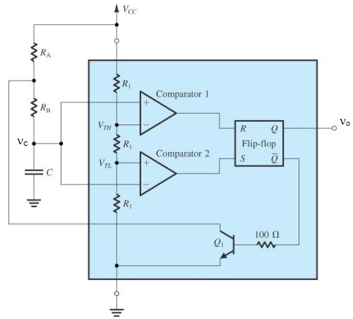

The circuit diagram for the astable multivibrator using IC 555 is shown here. The astable multivibrator generates a square wave, the period of which is determined by the circuit external to IC 555. The astable multivibrator does not require any external trigger to change the state of the output. Hence the name is free running oscillator. The time during which the output is either high or low is determined by the two resistors and a capacitor which are externally connected to the 555 timer.
|  |